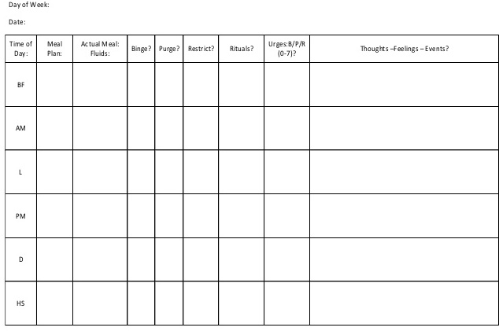
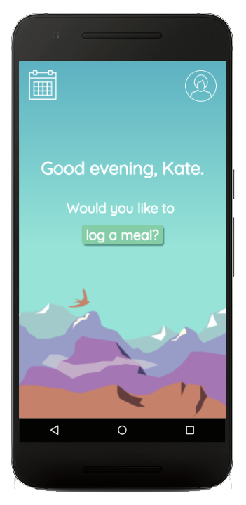
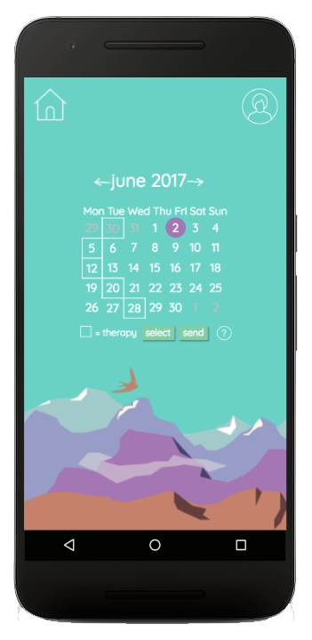
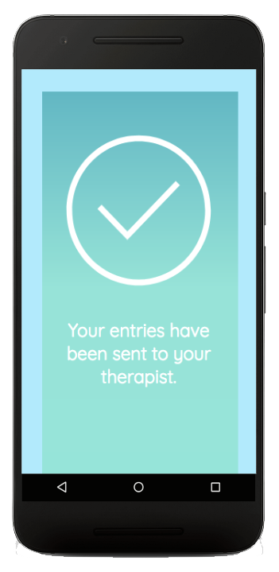
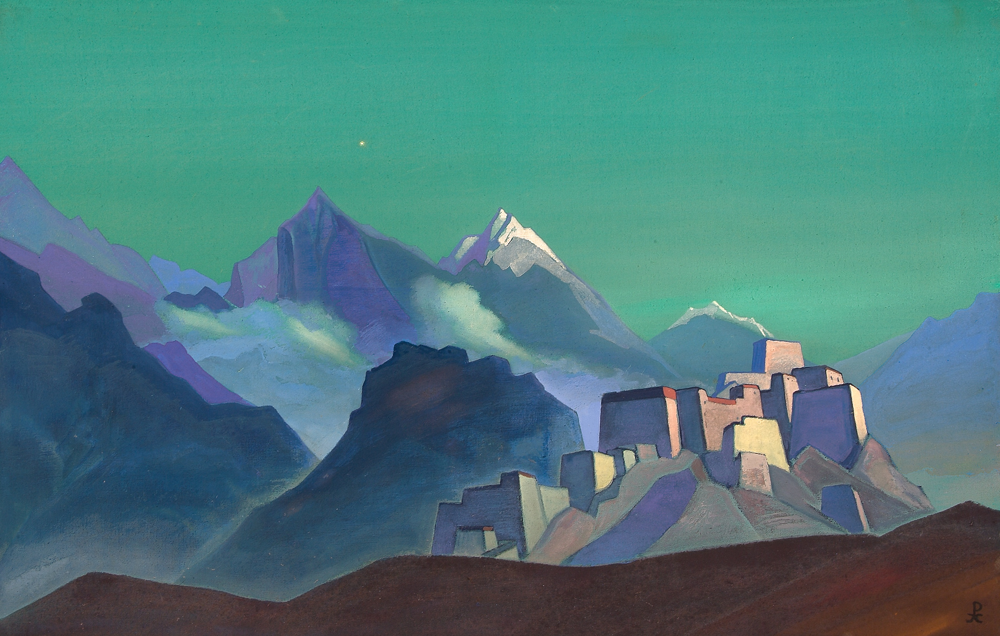

A Discreet "Food Diary" For Patients Recovering From Eating Disorders.
Persons who receive therapy for food-related mental health disorders are generally required to track their mood and eating habits. The A4 paper forms that are currently used for this are indiscreet and impractical for people on the go. Imagine having to fill out the form below Every. Single. Time. you eat or drink something!
Nourish is a prototype, built and designed by myself and two others during a five-day hackathon supported by the Anna Freud National Centre for Children and Families. It aims to replace paper "food diaries".
We used interactive elements to speed up the user's experience of logging a meal: the time of entry is autocompleted, they have the option to take a photo of their meal in place of writing a description, and there are sliding scales for evaluating their mood. Try it yourself, if you like.
We also added a calendar interface, from which the user can access past diary entries, to show recovery progress over time. This was received well by clinicans and test users who trialled the product remotely, although the calendar needs some work to make it more intuitive to use.
All importantly, there is the convenient option to send patient data to the therapist, so users are free to be paper-less.
The aesthetic is calming and airy, influenced by the paintings of Nicholas Roreich (see below). We wanted to differentiate Nourish from other dietary apps, so that there is no hint of bodily objectification.
I used: pencil and paper, Photoshop, Illustrator, HTML5, CSS, JavaScript.